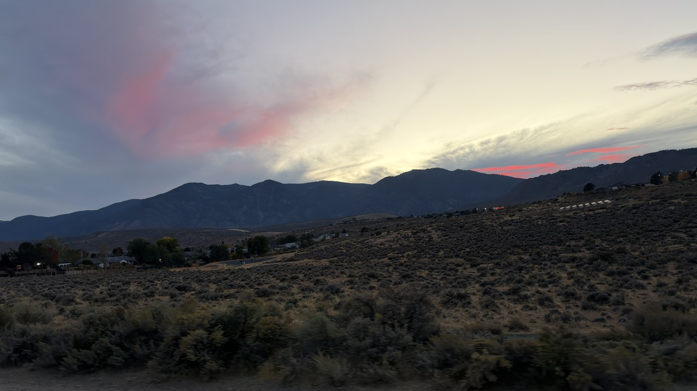
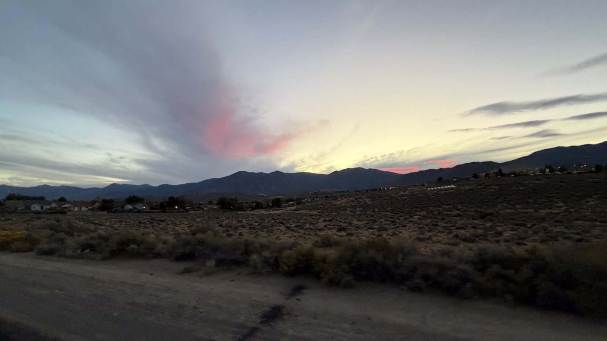

Friday night, my wife and I decided dinner was worth riding to. Helmets on, across the main road and up a back way that's more dirt than road, a bit bumpy and a lot more fun than driving.
A few minutes in I stopped for the sky. Over the ridge there was a cloud with a rainbow running through it, pink, green and violet like oil on water.

Ordering went fine. Then we realized neither of us had brought a bike light, and the sun was already heading behind the Sierra. Dinner to go, and home the long way on the best-lit roads we know.

The sky made up for it on the way back: a long pink streak over the mountains and the sagebrush going dark below it.
What I learned: pack the lights, even for a ride to dinner.